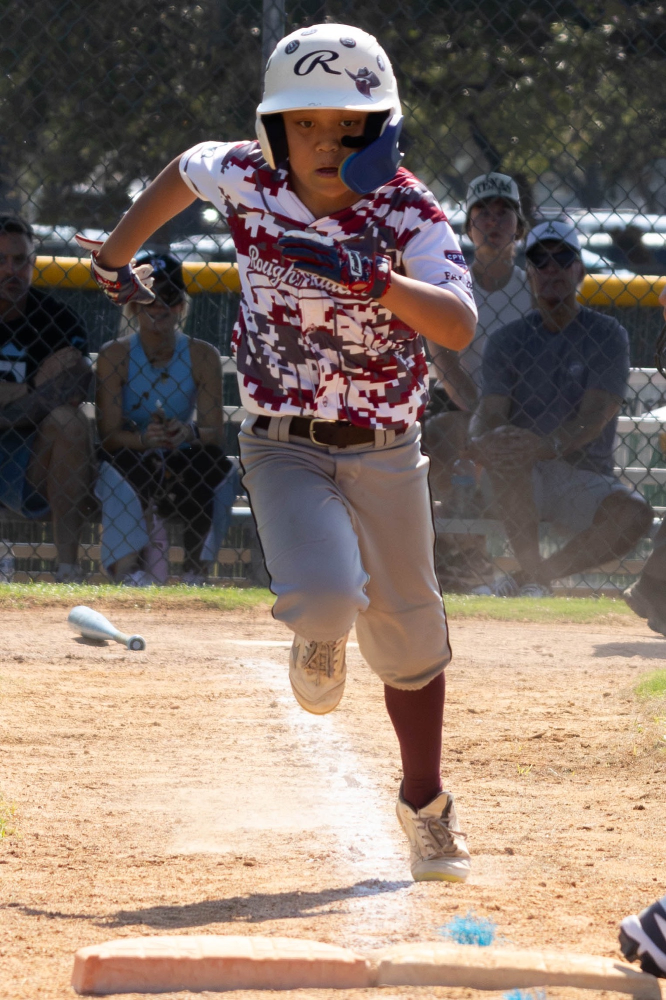
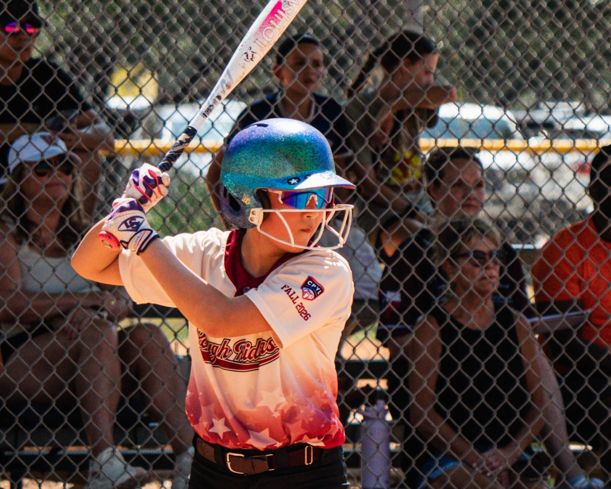
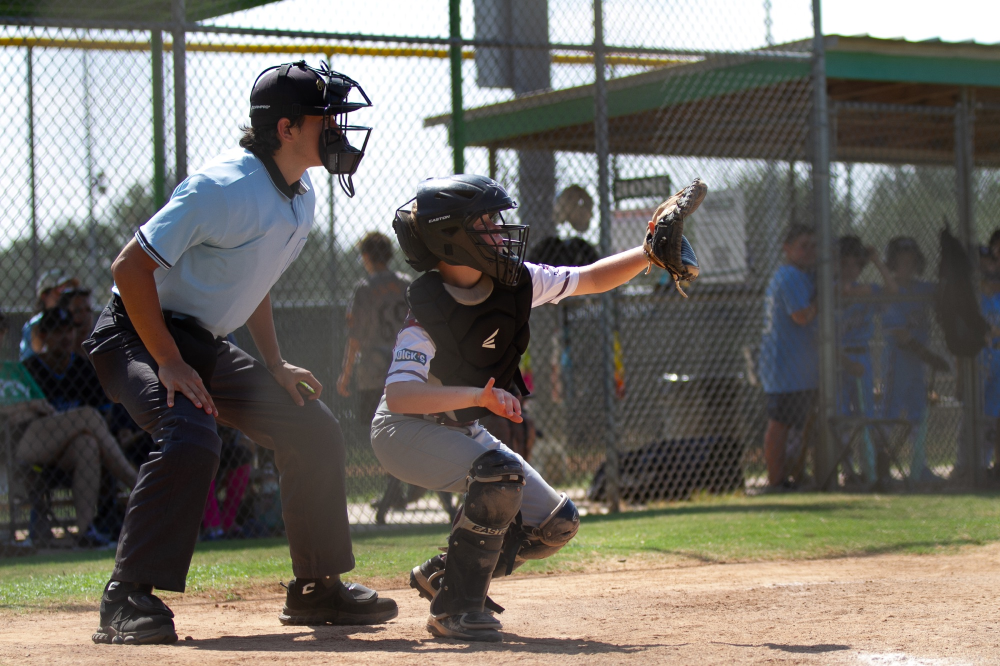
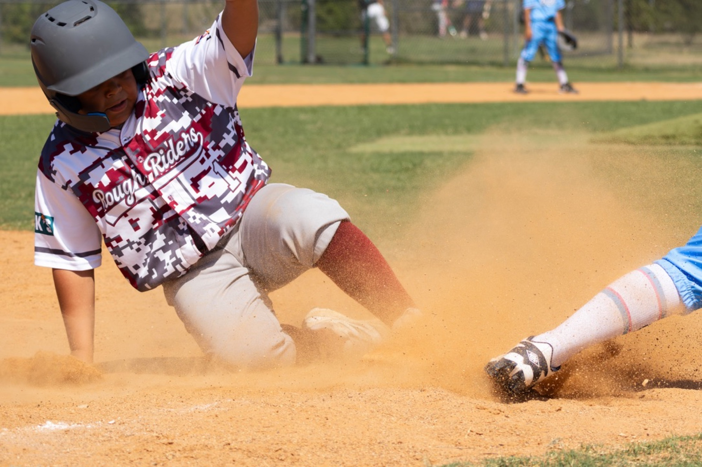
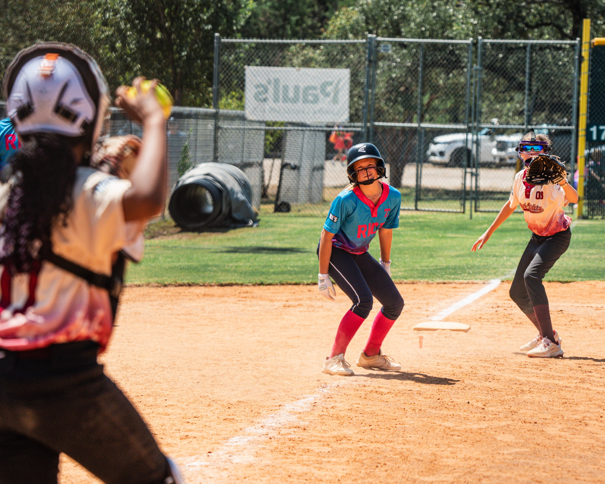
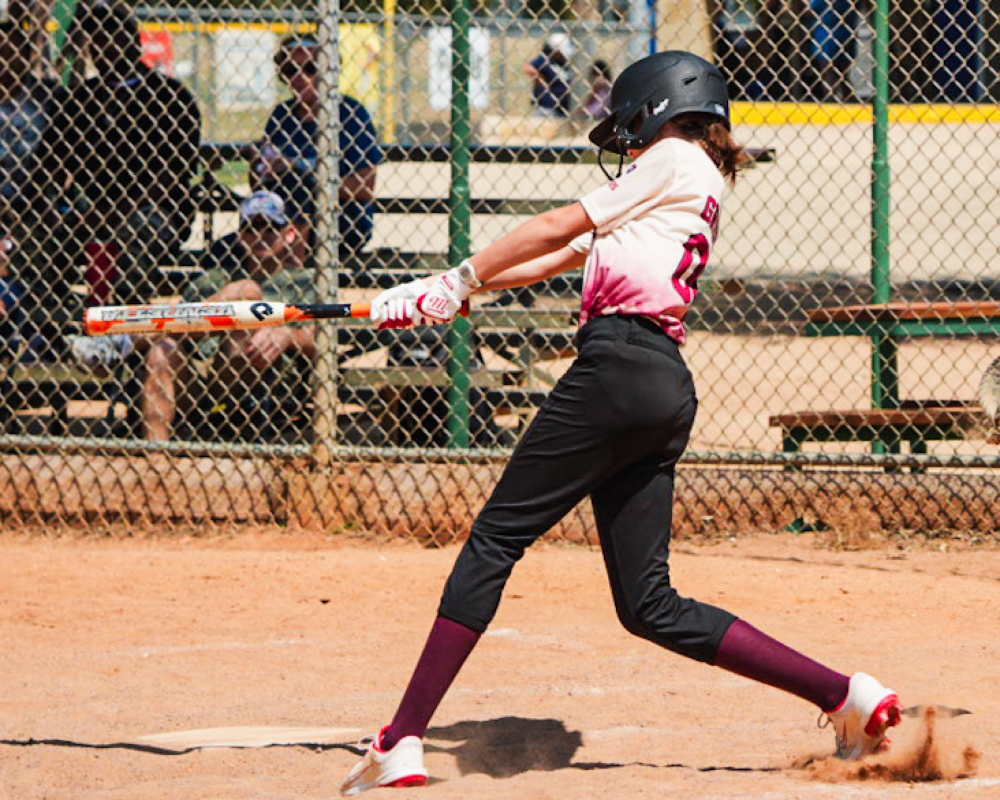

Community updates
Events
Follow along for Rough Rider Youth fundraisers, team updates, and community moments.
Featured event
Latest from Rough Rider Youth
We share event details and updates through our Facebook page. You can view the featured post here, or visit Facebook for the full conversation.
Visit FacebookRecent moments
The season in motion.
A quick look at the effort, joy, and teamwork that families bring to every field.





